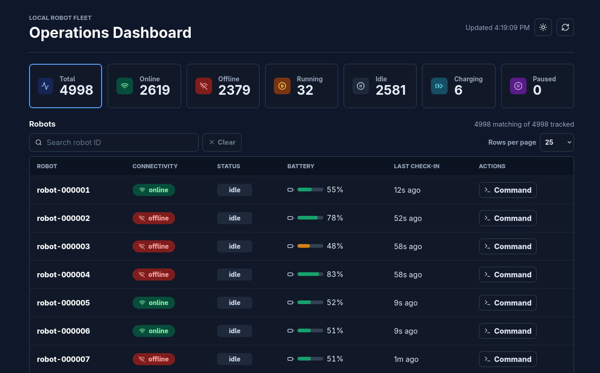
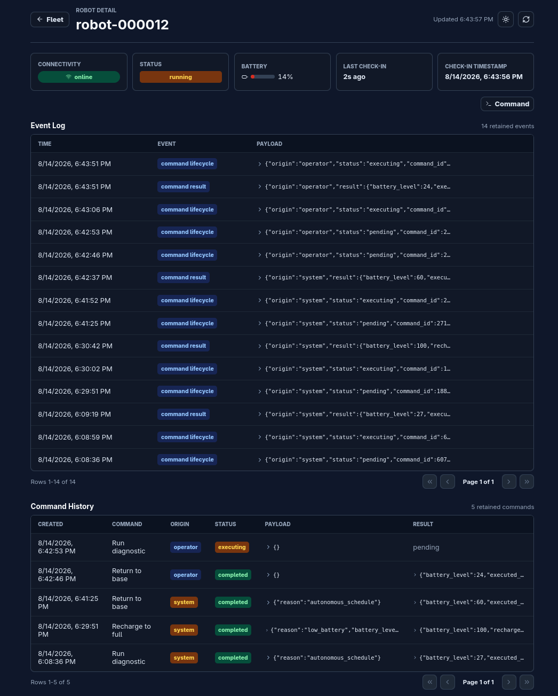
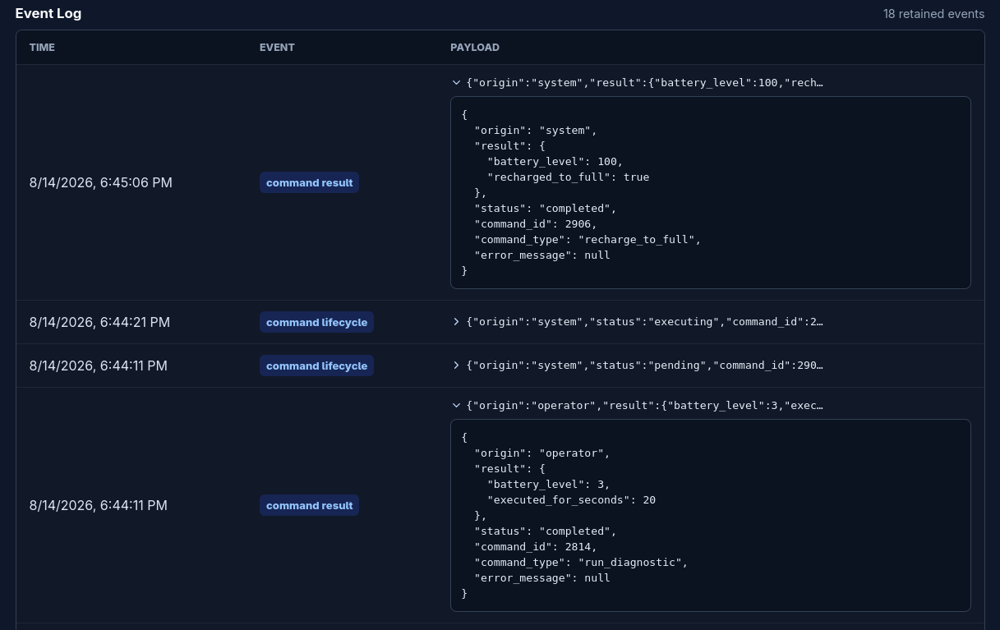
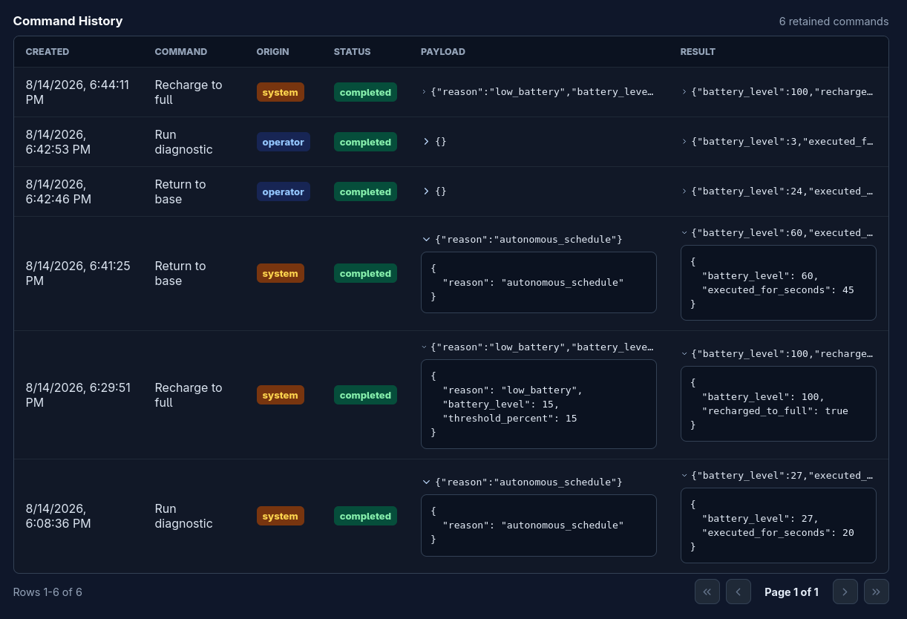
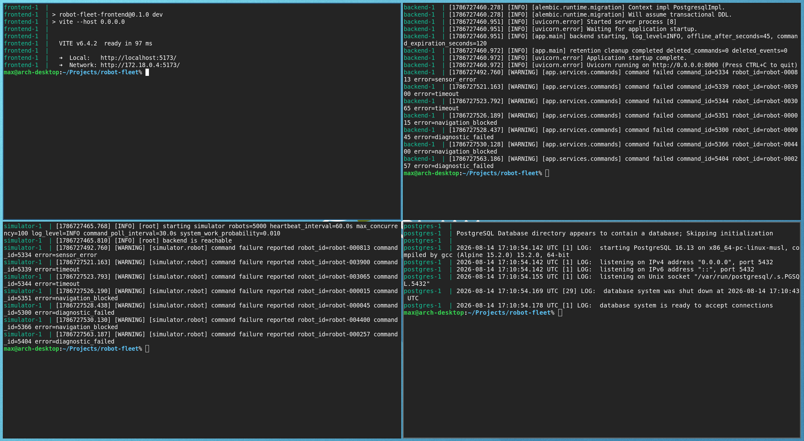

A simulation-first robot fleet control plane

I wanted to explore the software involved in operating a large robot fleet through an idealized simulation of 5,000 robots. I started Robot Fleet Operations as a local proof of concept that could make the coordination problems surrounding such a fleet tangible on a single machine. Instead of treating the simulator as a simple source of random data, I wanted each robot to behave independently and create a useful environment in which to reason about connectivity, state, failures, and operator control.
The first version established a complete but deliberately simple loop. Simulated robots reported their heartbeats, operational state, and battery level to a FastAPI backend, which stored the latest state in PostgreSQL. A React dashboard then polled the backend and presented the overall health of the fleet. Docker Compose tied the services together and Alembic applied the database migrations automatically, making the entire platform reproducible on one machine.
That initial workflow was enough to make the project useful: a robot checked in, the backend persisted what it knew, and the dashboard showed the result. It also exposed the more interesting questions that shaped the following iterations, particularly how to simulate thousands of independent devices without overwhelming the local environment and how to distinguish a robot's connectivity from the work it was performing.
The simulator represents every robot as an asyncio task inside a single Python process. The default configuration starts 5,000 of these tasks, while a shared semaphore limits the number of simultaneous HTTP requests to 100. This separates the size of the simulated fleet from the pressure applied to the backend and prevents request concurrency from growing directly with the robot count. Startup, heartbeat, and command-poll timing also include jitter so that thousands of robots do not contact the backend at the same instant.
Each robot keeps its own operational state and battery level. It can be idle, running, paused, or charging, while temporary downtime is simulated by stopping its check-ins long enough for the interruption to become visible. Connectivity is therefore not stored as another status value but calculated from the age of the latest heartbeat. This distinction is important because a paused or charging robot can still be online, while an idle robot that has stopped reporting should be considered offline. Battery use follows the same model by draining according to activity and recovering only while the robot is charging.
On the backend, PostgreSQL upserts maintain one current-state row for each robot instead of appending a new record for every routine heartbeat. Only meaningful command lifecycle and result changes are retained as events, which keeps the operational history useful without turning normal check-ins into a large volume of noise. For this stage, the goal was not to settle on a production architecture but to create a controlled baseline whose behavior I could observe and improve.



As the simulation became more active, the dashboard also had to remain useful without loading the entire fleet into the browser. Fleet totals, connectivity calculations, search, status filters, and pagination therefore run on the backend. The dashboard polls this data every five seconds and provides a quick overview of online, offline, running, idle, paused, and charging robots. Selecting a robot opens a dedicated page with its latest state, retained events, and command history, making it possible to move from a fleet-wide symptom to the behavior of one device.
I do not have frontend development experience, so the React interface was generated with AI from my requirements and feedback rather than being programmed directly by me. My role in that part of the project was defining the operational workflows, deciding which information and controls needed to be visible, and validating the result as the backend evolved.
With the monitoring workflow in place, I expanded the project to explore how an operator could send work back to a robot. Commands were initially added as persisted items that could be queued, claimed by the simulator, and completed with a result. That simple workflow quickly showed that queued and completed were not enough for work that takes time or may never reach a disconnected robot.
The command model evolved into an explicit lifecycle in which pending work becomes executing and eventually completes or fails, while unclaimed operator commands can expire. When a robot polls for work, the backend transactionally claims the oldest eligible command while preventing another worker from claiming the same item. The simulator then applies commands such as diagnostics, pausing, returning to base, or recharging over time and reports the final outcome back to the backend. Failures belong to the simulated runtime rather than to operator input, so conditions such as low battery or a sensor error remain part of the robot's behavior.
With that lifecycle defined, I applied the same command model to autonomous behavior. An idle robot can request system work, and reaching the low-battery threshold creates a non-expiring system recharge command instead of silently changing the robot to charging. The backend deduplicates open system work, and every command records whether it originated from an operator or from the system. This gives both manual and autonomous actions the same visible history and makes it possible to understand why a robot changed state, not only what its latest state happens to be.

The current version is still a local proof of concept and deliberately leaves several production concerns unresolved. Robots claim commands through REST polling, the dashboard also polls for updates, active execution state lives partly in simulator memory, and retention cleanup currently runs only when the backend starts. These limitations are useful because they define the next set of experiments rather than hiding where the prototype stops.
For the next iteration, I want to explore MQTT communication between robots and the platform, with heartbeats, telemetry, commands, and acknowledgements moving through explicit topics instead of relying entirely on polling. Quality of service, persistent sessions, and offline buffering would make unreliable connectivity part of the communication model itself. Beyond MQTT, I would like to add a telemetry pipeline, decouple ingestion and command delivery through Redis pub-sub, replace dashboard polling with WebSocket updates, and expose operational metrics through Prometheus and Grafana.
The existing backend and simulator logs use Python's standard logging and are available through Docker Compose, but a larger system needs stronger observability. I would like to move toward structured logs with robot and command correlation identifiers, central collection, and metrics for heartbeat delay, command latency, failures, and queue depth. If the platform ever moved beyond a local environment, device identity, encrypted communication, authorization, and durable execution would also become essential parts of the design.
The project remains a work in progress, but it has already moved well beyond displaying randomly changing robot values. Its most useful result is the explicit model that emerged around connectivity, operational state, command execution, and autonomous recovery. That provides a solid base for introducing more realistic communication and observability while keeping future behavior visible and auditable.